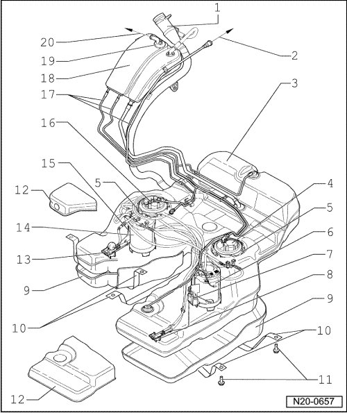

Fuel Tank with Attachments, Assembly Overview
Fuel Tank with Attachments, Assembly Overview
CAUTION!
During all repair procedures on the fuel tank, be aware of the following:
• Route all the various lines (e.g. for fuel, EVAP system, or vacuum) and electrical wiring so that the original routing positions are restored.
• Make sure that the ground (-) strap between the fuel filler tube and body is securely fastened, to prevent electrostatic charging.
• Ensure sufficient clearance to all moving or hot components.

1 Fuel filler tube
• With connection for ground strap to body
• Ensure seated tightly
2 To EVAP canister
3 Fuel tank
• Support using engine/transmission jack (V.A.G 1383 A) when removing
4 Fuel filter
• Disassembling and assembling --> [ Fuel Filter, Assembly Overview ] Fuel Filter, Assembly Overview.
5 Locking ring, 110 Nm
• Use wrench (T10202) for removal and installation
• Ensure seated tightly
6 Fuel delivery unit
• Left side
• Check fuel pump --> [ Fuel Pumps, Checking ] Fuel Pumps, Checking.
7 Fuel level sensor 3 (G237)
• Left side
• Flat, rectangular floater
• Clipped into bottom of tank
8 Suction jet pump
• Left side
• Clipped into bottom of tank
9 Protective cover
• For bottom of fuel tank
10 Securing strap
• Note installation position
• Ensure seated tightly
11 20 Nm + 1/4 turn (90°)
12 Protective cover
• For top of fuel tank
13 Suction jet pump
• Right side
• Clipped into bottom of tank
14 Fuel delivery unit
• Right side
• Check fuel pump --> [ Fuel Pumps, Checking ] Fuel Pumps, Checking.
15 Fuel gauge sender (G)
• Right side
• Round, spherical floater
• Clipped into bottom of tank
16 Flange
• Right side
• With fuel pressure regulator
• With gravity valve
• Individual components --> [ Individual Components of Flange, Right Side ]
• Note installation position on fuel tank --> [ Installed Position of Sender Flange on Fuel
Tank ]
17 Vent line
• Ensure seated tightly
18 Expansion tank
19 Gravity valve
20 To pressure retaining valve
Individual Components of Flange, Right Side

1 Connections for fuel pump (G23) and fuel tank sender (G)
2 Fuel pressure regulator (4 bar)
3 Ground wire
4 Pressure regulator inlet (from fuel filter)
5 Connection to left and right-hand fuel pump units (no pressure)
6 Gravity valve
Installed Position of Sender Flange on Fuel Tank

- Insert sender flange with marking - arrow - in direction of travel.